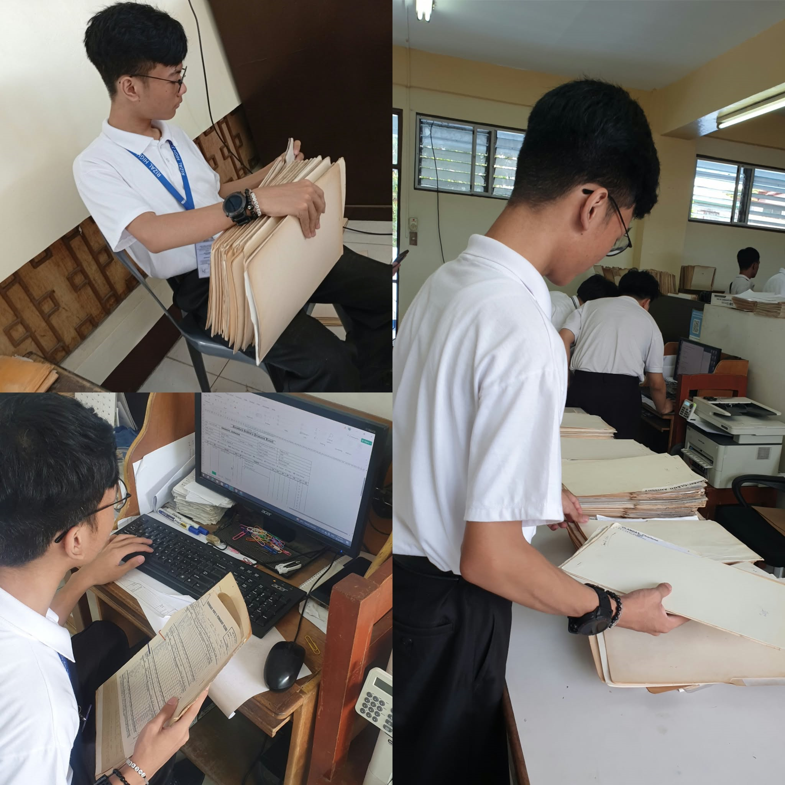
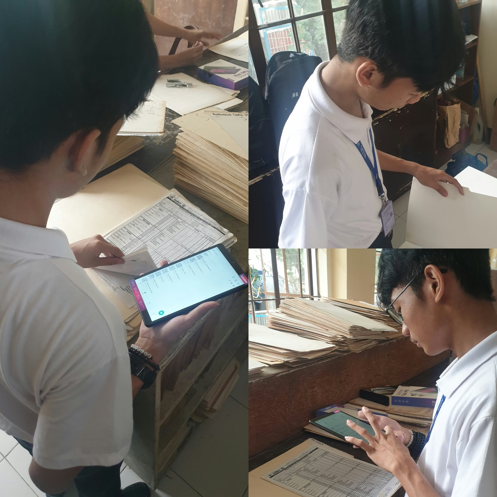
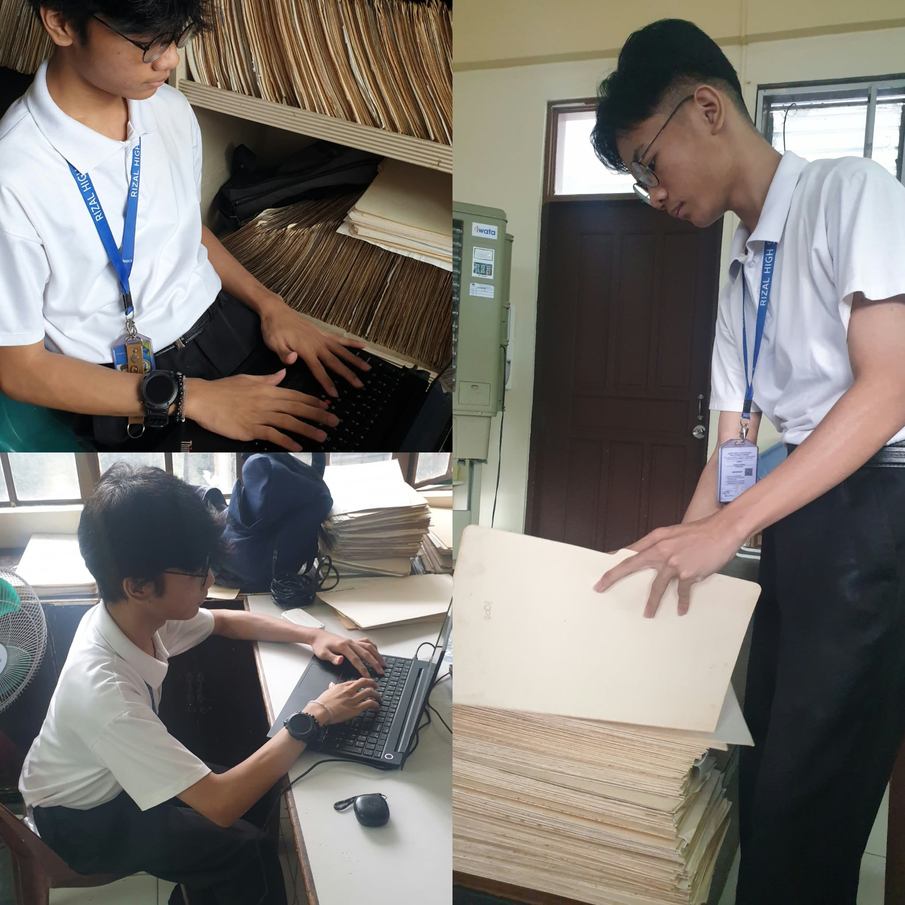
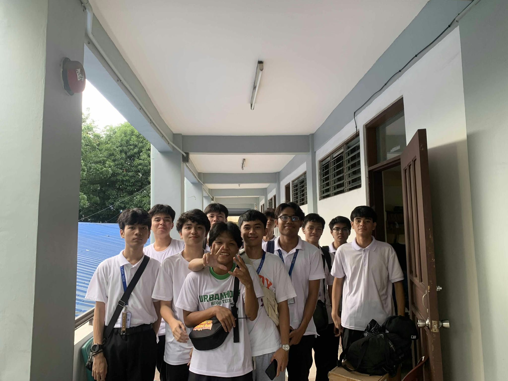
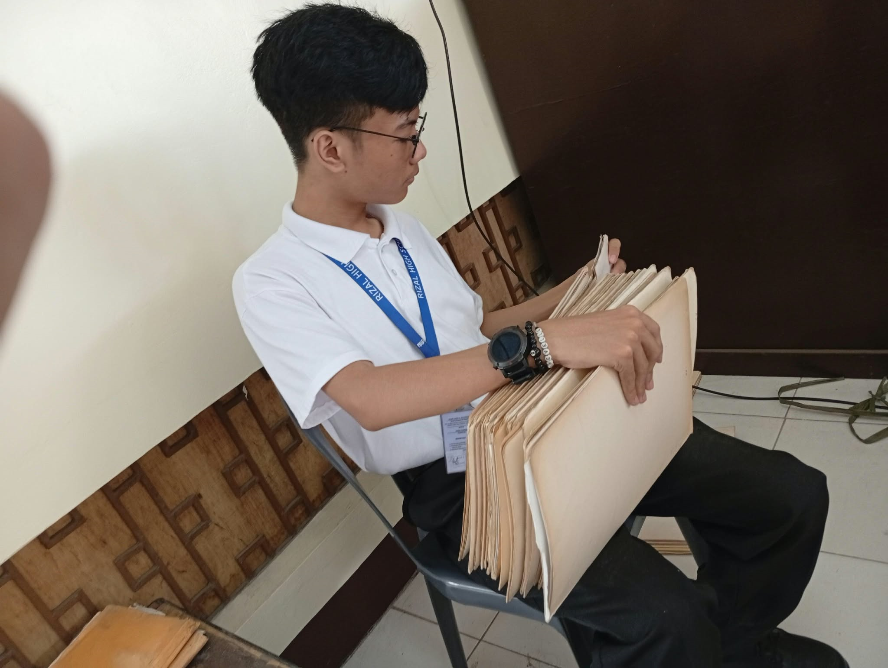
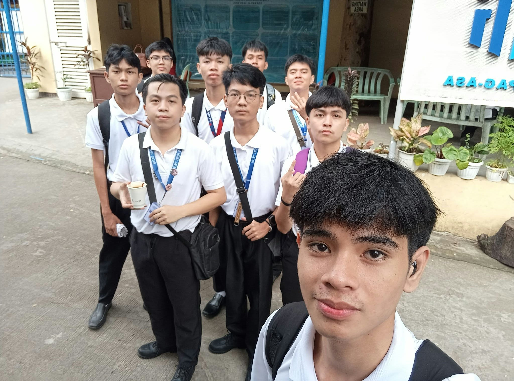
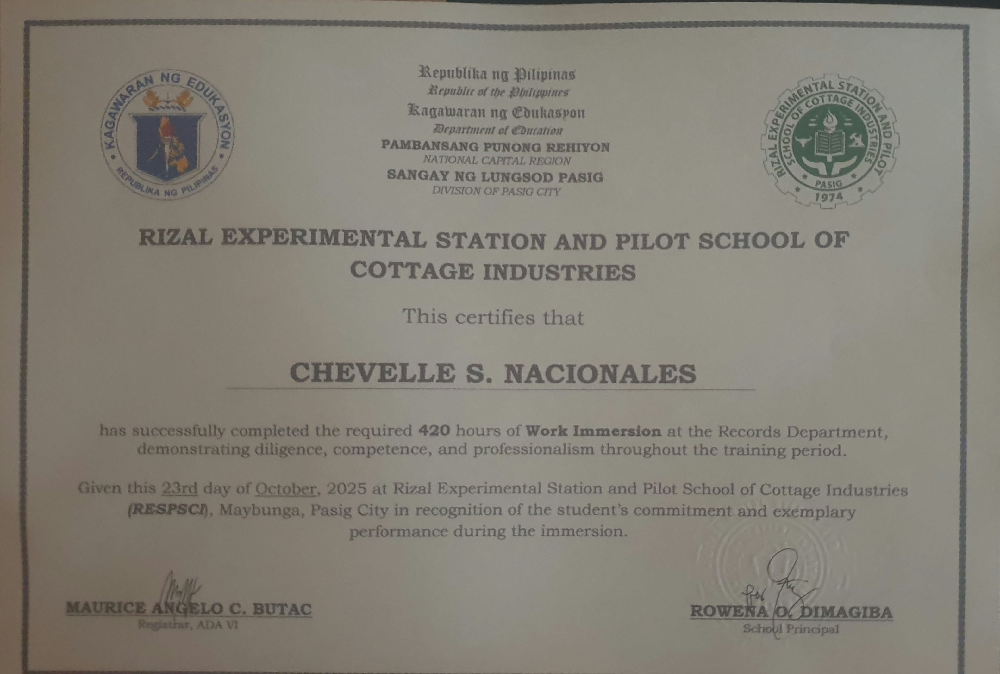
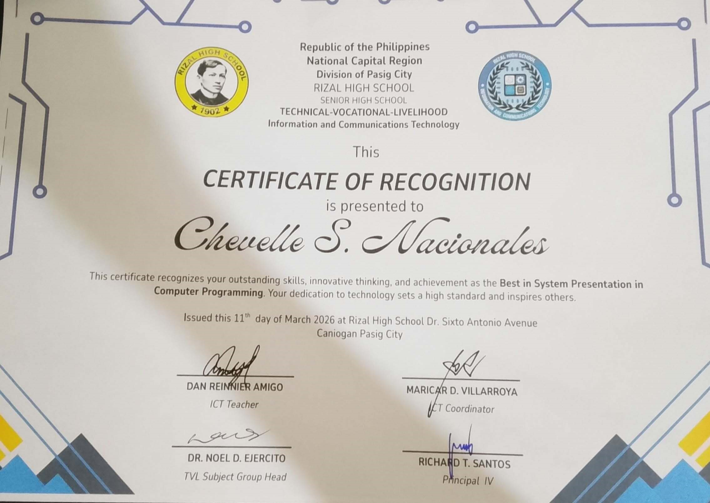

Welcome to My E-Portfolio
This website serves as a collection of my academic works, achievements, and experiences from my Senior High School at Rizal High School throughout my journey as a Bachelor of Science in Information Technology student at Jose Rizal University.
CHEVELLE S. NACIONALES
Jose Rizal University
BS Information Technology
Who Am I?
I am Chevelle S. Nacionales, an 18-year-old student with a passion for gaming and technology. My interest in technology has also led me to develop a passion for programming, particularly in creating websites, games, and other digital projects.
Educational Background
TVL - ICT Programming
BS Information Technology
Goals and Inspiration
My goal is to become a web developer and eventually explore game development, where I can turn my ideas into real projects. I also aspire to become a freelancer, allowing me to work on different projects, gain experience, and earn through my programming skills. My biggest inspiration comes from programmer content creators on social media, whose projects and coding journeys motivated me to learn programming and pursue a career in technology. I hope to follow a similar path and become a skilled developer someday.
Academics & Relevant Works
Computer Programming 1 Compilation
All PTs, machine problems, activities, seatworks, and other outputs.
View PDFWork Experience
As a Senior High School student at Rizal High School, I completed a 420hrs work immersion program at Jenny's Avenue Extension, Barangay Maybunga, Pasig City, Philippines, as part of the first batch of students assigned to the location. I was assigned to the school's office, where I helped manage, encode, and organize student files and records using Microsoft Excel. Throughout the immersion, I learned how to properly handle documents, maintain organized records, and ensure accuracy when managing student information. This experience also helped me develop practical skills in office work, teamwork, time management, and responsibility while giving me a glimpse of how a real working environment operates.
GALLERY OF WORK IMMERSION & RECOGNITION








We developed a Sales and Records Management System for an eatery using Java, JavaFX, and SQLite. The system aimed to simplify sales tracking, manage customer orders, and organize business records. Although we were unable to finish the system and deliver it to the intended eatery, our project was still recognized among the works of other students. It became a valuable learning experience that strengthened our programming, database management, and teamwork skills.
Reflection
Prelim Term
During the preliminary term of Computer Programming 1, I learned about flowcharts, pseudocode, and logic formulation. These topics helped me develop a better understanding of how to organize steps and plan solutions before writing a program. I found these lessons manageable and enjoyed learning how to translate problems into logical steps.
Midterm Term
During the midterm term, we were introduced to Java and its basic concepts. I learned how to write simple programs, use print statements, understand basic syntax, and apply conditional statements such as if and else. I was able to follow the lessons comfortably and enjoyed applying what I learned through coding activities and exercises.
Final Term
During the final term, we focused on loops and more challenging programming activities. I learned how to use looping statements to repeat instructions and solve more complex problems. Compared to the previous terms, the activities required more logical thinking and careful planning. These lessons helped me improve my problem-solving skills and become more confident in writing Java programs.